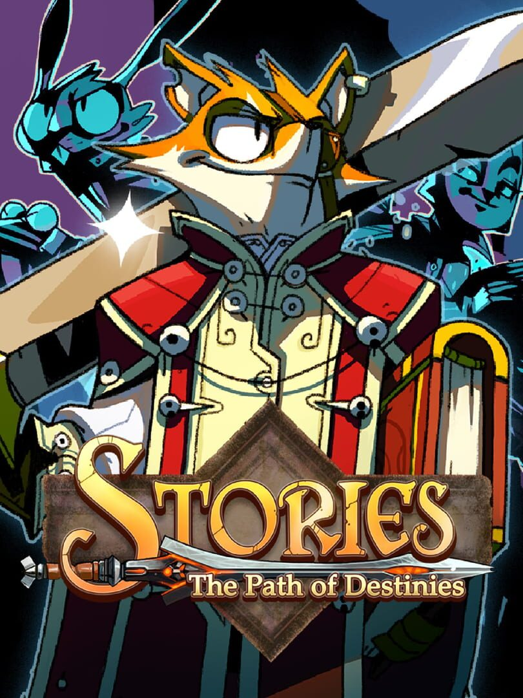

Stories: The Path of Destinies
Stories: The Path of Destinies
Details
|  | |
| Playtime | 2m 0s |
| Last Activity | 2017-10-27 21:59:37 |
| Added | 2023-08-11 0:29:07 |
| Modified | 2023-08-11 0:33:45 |
| Completion Status | Played |
| Library | Steam |
| Source | Steam |
| Platform | PC (Windows) |
| Release Date | 2016-04-12 |
| Community Score | 69 |
| Critic Score | 71 |
| User Score | |
| Genre | Adventure Indie Role-playing (RPG) |
| Developer | Spearhead Games |
| Publisher | Spearhead Games |
| Feature | Single Player |
| Links | Facebook Wikia Official Steam GOG Wikipedia Twitch |
| Tag | |
Description
Stories: The Path of Destinies is an action RPG set in a vibrant fairytale universe filled with floating islands, majestic airships, and colorful magic. Reynardo, ex-pirate and unintentional hero, suddenly becomes the last line of the defense against the mad Emperor and his countless ravens. Can he come up with a plan that won’t blow up in his face, for a change?
In Stories, each choice you make takes Reynardo into a unique narrative. From tongue-in-cheek takes on heroic adventures to dark, Lovecraftian scenes, Stories’ repertoire is as diverse as it is action-packed. But Reynardo’s fateful decisions won’t always come easy: Sometimes retrieving a weapon lost at the beginning of time means sacrificing the life of an old friend. But with so many choices to make, so many potential dire destinies, wouldn't it be great to be able to come back in time, learn from your mistakes and find the one true path?

Stories: The Path of Destinies now runs on Unreal Engine 4.18 with enhanced graphics and better performance!
In Stories, each choice you make takes Reynardo into a unique narrative. From tongue-in-cheek takes on heroic adventures to dark, Lovecraftian scenes, Stories’ repertoire is as diverse as it is action-packed. But Reynardo’s fateful decisions won’t always come easy: Sometimes retrieving a weapon lost at the beginning of time means sacrificing the life of an old friend. But with so many choices to make, so many potential dire destinies, wouldn't it be great to be able to come back in time, learn from your mistakes and find the one true path?
Stories: The Path of Destinies now runs on Unreal Engine 4.18 with enhanced graphics and better performance!
KEY FEATURES
- Unique choice-based narrative in which players explore many different storylines to find the path to victory
- Fluid and fast-paced combat blending acrobatic swordplay, grab attacks, special abilities, and more
- Charming hand-drawn illustrations and a colorful storybook aesthetic
- A deep skill tree where players can unlock powerful new abilities such as the Hookshot or even Time Mastery
- An arsenal of magic-infused swords that can be crafted and upgraded
- An original soundtrack that changes dynamically with every choice